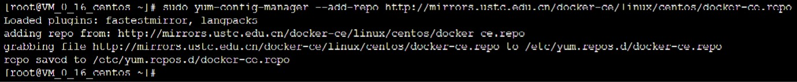
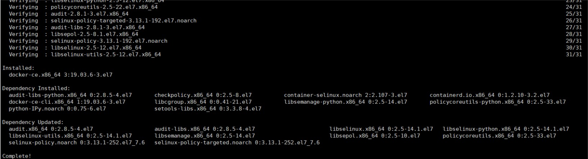
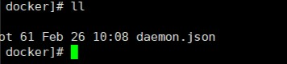

Docker
什么是Docker
- 百度百科：Docker容器是一个应用容器引擎， 让开发者可以打包他们的应用以及依赖包到一个可移植的镜像中，然后发布到任何流行的 linux 或 Windows 机器上，也可以实现虚拟化。容器是完全使用沙箱机制，相互之间不会有任何接口。
说白了就是把应用（项目）部署到Docker容器中运行，就好像放在真实的物理机上运行一样，不用担心开发环境和生产环境的不一致。
为什么要使用Docker
-
Docker 容器的启动可以在秒级实现，这相比传统的虚拟机方式要快得多 。
-
性能很高 ， 系统的开销尽量小 。
-
环境一致，让开发人员专注于开发。
-
应用迁移更便捷。
-
应用更好维护。
应用场景
-
web应用的自动打包和发布
-
自动化测试
-
可持续集成
-
安装各种组件
Docker的组成部分
-
Docker客户端：个人电脑安装的docker软件、用来连接操作docker。
-
Docker守护进程：例如有容器A、镜像1 （容器时基于镜像来运行的,镜像相当于类，容器则是类的实例）。
-
Docker镜像：从docker仓库中拉去过来，而docker仓库又分共有(docker hub)和私有仓库。
以下以 centOS7 系统为基础环境讲述
卸载旧的版本
如果你的系统中已经有旧版本，那么就卸载他吧， 较旧的 Docker 版本称为 docker 或 docker-engine，卸载后记得要删除相关依赖项。
-
更新 yum 源：
1
sudo yum update
-
查看已安装软件是否有Docker：
1
yum list installed
-
或者直接查看有没有安装Docker：
1
yum list installed | grep docker
-
如果有的话卸载及相关依赖：
1
yum -y remove docker.x86_64#软件名看你自己的
安装Docker社区版(个人和中小型企业基本够用)
-
安装先安装需要的软件包：
1
sudo yum install -y yum-utils device-mapper-persistent-data lvm2
-
设置yum源：
1
sudo yum-config-manager --add-repo http://mirrors.ustc.edu.cn/docker-ce/linux/centos/docker-ce.repo
如果返回结果如下图表明设置成功：

-
安装docker：
1
sudo yum install -y docker-ce
如果返回结果如下图表明安装成功：

-
查看docker安装版本：
1
docker -v
配置Docker镜像源
-
创建文件夹：
1
mkdir /etc/docker
-
使用一下命令编辑内容并创建文件—daemon.json
1
cd /etc/docker
1
vi daemon.json
-
文件内容为：
1
{"registry-mirrors":["https://docker.mirrors.ustc.edu.cn"]}
镜像也可以用自己的阿里云镜像加速(建议)
-
编辑完后，按
Esc键，然后按:，输入wq，保存文件并退出。 -
在/etc/docker目录下使用
ll命令查看文件是否创建成功？
Docker基础命令
下面我们来了解一下docker的基础命令
-
首先是启动docker服务：
1
systemctl start docker
-
停止docker服务：
1
systemctl stop docker
-
查看docker当前状态：
1
systemctl status docker
-
重启docker服务：
1
systemctl restart docker
-
把docker服务设置成开机自动启动：
1
systemctl enable docker
到这里说明你已经距离入门还有一大段距离~~~干巴爹斯！！！！